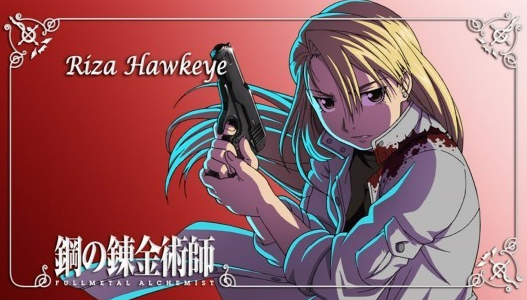

正派角色
斯卡
斯卡這個名字並非本名，而是來自英文單字scar(傷疤)。因為他的臉上有兩道大大的傷疤而這樣稱呼。身為少數民族-伊修瓦爾，家人在國家實行的種族清洗幾乎被屠殺殆盡，尤其自己的兄長慘死在紅蓮之鍊金術師-金布里手上，仇恨的蒙蔽之下，他開啟了屠殺國家鍊金術師的計畫。但在故事後段，伊修瓦爾之役其實是國家陰謀的一部分的秘密慢慢被接露之後，他便開始下定決心，要從內部改變自己的國家。
伊姿米．卡迪斯
愛德和阿爾的老師，胸前有「榮耀之蛇」圖樣，經常穿著木製拖鞋。格鬥能力高強，師承隱居北方之格鬥家。經常稱呼自己為「家庭主婦」。為復活夭折的孩子，曾進行人體鍊成，因此失去了幾乎所有內臟造成體弱多病，常常會吐血，也失去了生育能力（因為想再次擁抱孩子，所以被「真理」帶走了生育孩子的子宮）。與丈夫旅行途經利塞布爾時幫助遏止洪水，並收了愛力克兄弟二人為徒，對二人非常嚴厲，而且不滿愛德出任國家鍊金術師，但亦十分關心他們，其後把兄弟逐出師門，方便與二人平等相待。因為見過真理，不用鍊成陣便可進行鍊成。
馮．霍恩海姆
艾利克兄弟的父親，出生於因過度發展鍊金術而滅亡的克塞魯克塞斯（現存遺址），是鍊金術師實驗室中的「23號」奴隸，沒有姓名，由主人抽取其血液，在燒瓶中做出擁有一切學問的「人」。「燒瓶裡的小人」為報答他以血液使自己出生，便替他取名「馮•霍恩海姆」，同時教他鍊金術和識字，使他成為主人的助手。之後「燒瓶裡的小人」指導追求長生不老的國王畫出國土鍊成陣，藉此將全國人民鍊成賢者之石，導致克塞魯克塞斯一夜滅亡，只有成了賢者之石的霍恩海姆和「燒瓶裡的小人」存活，體內各帶有半數國民靈魂（因為霍恩海姆想讓國家更繁榮，所以被真理帶走了整個國家），因此毋須畫出鍊成陣或合掌就可使用鍊金術。「燒瓶裡的小人」則因為霍恩海姆的血液供應而擁有與之相同的外貌。 霍恩海姆在其後數百年間不斷跟身體裡眾多的靈魂溝通。向東流亡時，在沙漠被清國商旅救回並把鍊金術傳至當地，成為鍊丹術的基礎（自己成為清國傳說中的「西方賢者」）。其後又西行到達利塞布爾，在那裡經比拿可介紹認識了特蕾莎，婚後生下愛力克兄弟，與妻兒相處多時而感受到一直渴望的家庭溫暖，並希望與妻子白頭到老。在得悉「燒瓶裡的小人」的企圖後，為了阻止他被迫離開家人重新上路。流浪途中暗中支援愛力克兄弟等人的行動。
羅伊．馬斯坦古
人稱焰之鍊金術師，以成為國家的最高統治者大總統作為目標。在動畫和漫畫的大部分時間都是上校，因此部下稱他為「上校」或「馬斯坦古上校」（於日語中稱作與「上校」同階同義之「大佐」）。他也是主角艾德華成為國家鍊金術師的推薦者與進入軍部後的上司。 馬斯坦古的師父聽到他的願望後，希望他通過最強大的焰之鍊金術造福人民。但在伊修瓦爾之役後期，因為大總統金格•布拉德雷徵召國家鍊金術師而隨軍參戰，奉命攻擊伊修瓦爾人；因為立下戰功而贏得「伊修瓦爾英雄」的稱號。初登場時似乎只是一個無情的野心家，而且傲慢不正經，喜歡「把男性部下當奴隸差遣」，更希望在當上大總統後讓全軍女性都穿上迷你裙，實際上善良正直而且機智；想成為大總統，也是為了能夠保護一直受戰火所苦的人民。

麗莎．霍克艾
馬斯坦古身邊的輔佐官，人稱鷹眼，以冷靜沉著的應戰技巧，完美地輔助長官的美女神射手，擅於使用白郎寧M1910手槍等槍類武器，主要任務為保護馬斯坦古，然而兩人之間的情愫不言可喻。養著一隻嚴格訓練的黑白小狗，名叫「黑色疾風號」。
馬斯．修茲
馬斯•修茲在軍部任職軍法會議所，下屬是阿姆斯壯少校，軍階是中校。馬斯•休斯在軍部任職軍法會議所，下屬是阿姆斯壯少校，軍階是中校。修茲非常愛他的妻女，經常給同袍看女兒的相片；甚至在醫院一見到探訪愛德的溫莉，就硬帶她回家為女兒慶祝三歲生日。在漫畫的特別附錄中（相對第一作動畫第13話），更曾在愛德和馬斯坦古決戰前，當著大總統和百多名官兵面前展示他三歲女兒的巨大相片。另外，休斯非常重視下屬和朋友，在戰場上已約定協助馬斯坦古當上大總統；自己之所以被殺，亦是因為幫助愛力克兄弟調查賢者之石之故。
亞利士．路易．阿姆斯壯
渾身都是發達的肌肉，是為豪腕之國家鍊金術師。家中經營與政經界有著密切關係的事業，同時也是擔任歷代將軍的名門世家。採用和外觀不相稱的輕盈步法戰鬥，此外有極佳的家傳藝術修養，並將之應用在鍊金術中。口頭禪為「這是我們阿姆斯壯家代代相傳的……」。其特徵是圍繞周身的粉色小星星，以及額頭上代表阿姆斯壯家族的捲毛，常莫名其妙地脫下上衣炫耀自己的肌肉。 在伊修瓦爾殲滅戰時，因內心煎熬無法配合行動，被認為違背命令而送回中央市。雖然因此常被大姊鄙視，但心底裡非常尊重她。性格善良、感性、嫉惡如仇但智力和權謀並不算上乘。斯卡襲擊愛德華等後在他身邊擔任護衛，得悉了賢者之石的祕密以及愛德華的過去。曾隨大總統赴南方，回去後發生了羅斯被誣諂的事件。之後在馬斯坦古安排下，與愛德華前往克塞魯克塞斯遺跡見羅斯，從此在對抗父親大人的過程中便不斷起輔助的角色。
奧莉薇•米拉•阿姆斯壯
阿姆斯壯家的長女，鎮守北方布利古斯要塞，有「布利古斯的北壁」和「冰之女王」之稱的美女將軍。 擅長劍術、性格異常冷靜而且頭腦精明，擁有強大的女王氣勢，優柔寡斷的弟弟不同。把部隊訓練成能自行運作，齊心對抗敵人的優秀軍隊。表面上非常冷酷無情，奉行「弱肉強食」和「大意的話就會被幹掉」的法則，但內裏對忠心的部下非常珍惜。同樣地，雖然表面上看不起亞力士，內心卻非常愛護他。與馬斯坦古不咬弦，但大敵當前二人決定合作對抗人造人及父親大人。 在愛力克兄弟遠赴北方時登場，彼此合作捉住斯洛烏斯。因雷文中將突然拜訪被迫放走斯洛烏斯，但在探知人造人的陰謀後殺掉中將，以「不入虎穴，焉得虎子」之勢孤身前往中央，假意順從他們。回到家中逼令家人遠走，因和亞力士決鬥完勝而成為阿姆斯壯家當家，並暗中調動部下潛藏大宅之內。到「約定之日」突然發難，進佔中央，與弟弟合力對戰斯洛烏斯被打至重傷。事件結束後回到北方領地，與東方的馬斯坦古成為古拉曼最得力的助手之一。
姚麟
15歲。清國的十二皇子，由代表姚族的皇妃所生。背負姚族五十萬人的命運，到亞美斯特利斯尋找長生不老之術。本人相當愛護下屬，經常掛在口邊的話是「王是為人民而存在，沒有人民就不可能有王」。因為出身皇族自小常面對暗殺等襲擊，故懂得清國武術並擁有一定實力，而且不拘於正面對抗，必要時也會使出小伎倆取勝。 初登場時遇上愛力克兄弟，知道二人有賢者之石的線索後便死纏不休，為了解66號不死秘密而幫助營救羅斯少尉；又為了解人造人的秘密跟隨愛德，因為想搶先捉住庫拉多尼，惹來大總統（拉斯）攻擊，為保護受傷的蘭芳落入下風而敗走。之後與莉莎和愛德合力抓住庫拉多尼但被他逃脫，與愛德華和恩維一起被他吞入肚子裡；後來因愛德打開真理之門而逃出生天，卻遇上父親大人。被父親大人看中他強大的野心，以「強慾」的賢者之石注入他體內血液中，使古利德在他體內重生。 雖然接受古利德控制軀體，心智仍存在體內沒有消失。當古利德控制軀體時性格改變，而且不認識愛德華等人，但姚麟一直在體內監視他並和他對話，更不時和他爭奪身體控制權。後來古利德容許姚麟在布條上用清國文字寫上「我得到賢者之石」[4]，再透過愛力克兄弟傳給蘭芳。在不斷和古利德的對話中，也使對方逐漸了解自己真正追求的目標。 之後古利德因恢復前世的記憶再次叛離父親大人，帶著姚麟加入了愛德一方。與古利德融合的姚麟可以「碳素變硬」，使自身變得如鑽石一樣硬，並參與了「約定之日」前夜與普萊德的對戰。在中央司令部為救胡爺爺與古利德協議暫時取回身體控制權，與拉斯交戰，並在古利德配合下，以硬化的手臂成功破壞他的「最強之眼」；又受帕卡尼亞臨終所託，以「最強之盾」打敗了進攻司令部正門的中央軍團。
張梅
清國的第十七公主，鍊丹術師，由代表張族的皇妃所生。與姚麟屬不同族而對立。代表清國最弱勢的張族，同樣為尋找長生不老之術而來到亞美斯多利斯。擅長鍊丹術的遠距離運用及療傷。在尤斯威爾礦坑遇到斯卡一行人，並為斯卡療傷，因為與斯卡在本國同屬弱勢而互相幫忙。之後因為尋找熊貓小梅，與斯卡追蹤阿爾馮斯到達父親大人所在。攻擊父親大人一夥失敗後與斯卡分頭逃走，躲在阿爾鎧甲內避過大總統的傷害，離開中央司令部後隨阿爾前往諾克斯醫生家中療傷。 起初聽到關於鋼之鍊金術師的傳言而心生嚮往，一心尋找「愛德華•愛力克公子」，但見到愛德本人後因為他是矮子而幻想破滅，轉而期待變回人型的阿爾。在認識阿爾之後就參與對抗人造人，前往北方與斯卡、阿爾和馬可合力解讀斯卡之兄的研究，在抓到體內有賢者之石恩維後被斯卡勸說回國，不過因為擔心眾人的安危而回到中央。回去後雖然令恩維恢復能力，但眾人在她的鍊丹術幫助下，得以正面對抗父親大人。
>>TOP<<